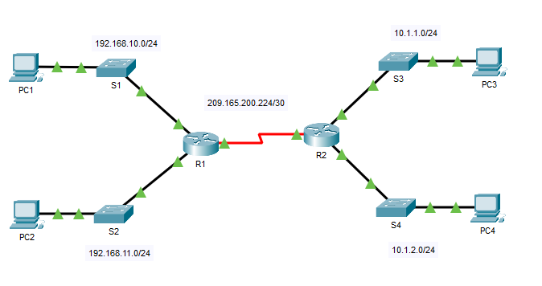
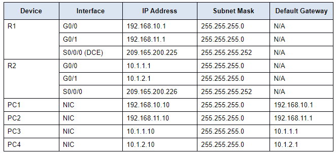
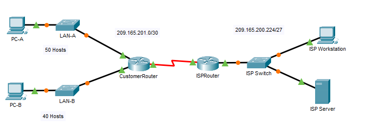
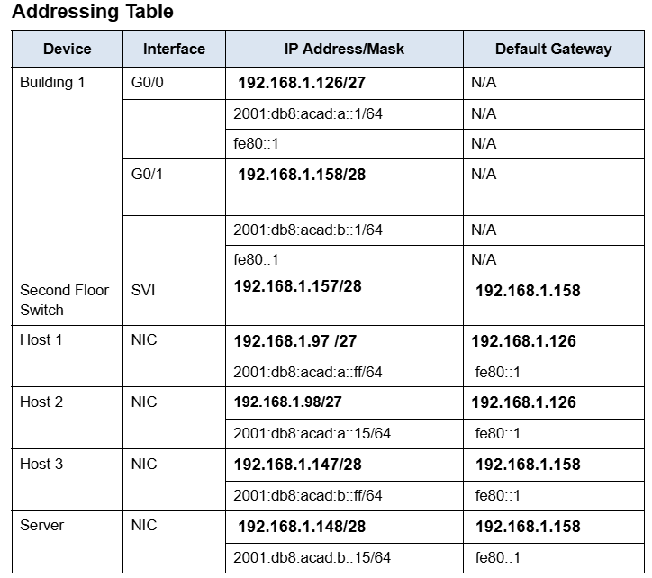
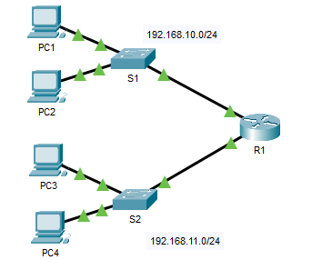
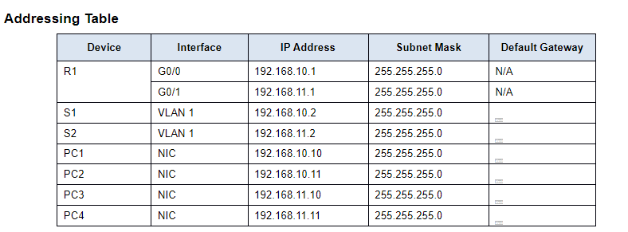

In this lab, I configured a router and connected it to a local area network using Cisco Packet Tracer. I assigned IPv4 addresses to router interfaces based on the addressing table, verified interface status using Cisco IOS commands, and tested connectivity between devices with ping commands. This lab strengthened my understanding of basic router configuration, network addressing, and troubleshooting connectivity issues.


In this lab, I designed and implemented an IPv4 subnetting scheme for a customer network in Cisco Packet Tracer. I calculated subnet ranges, assigned IP addresses to devices, configured routers and switches, and verified connectivity across the network. This lab improved my understanding of subnetting, network planning, and device configuration.


In this lab, I troubleshot network connectivity issues in Cisco Packet Tracer by identifying and correcting configuration errors related to default gateways and device communication. I used troubleshooting techniques such as verifying IP configurations, checking connectivity with ping commands, and isolating network issues. This lab strengthened my problem-solving skills and understanding of network troubleshooting processes.

